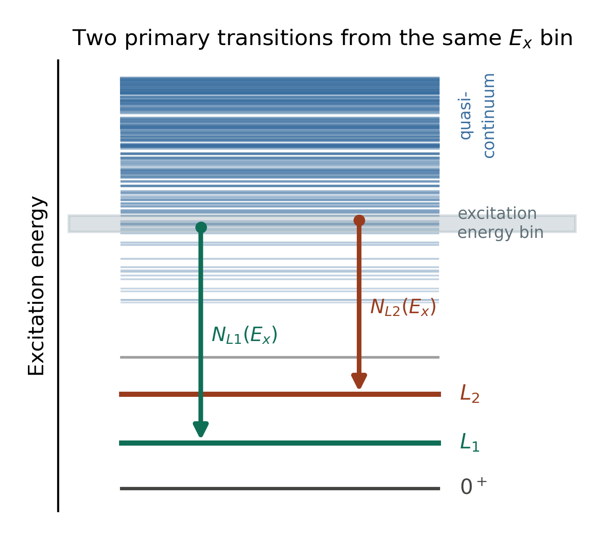
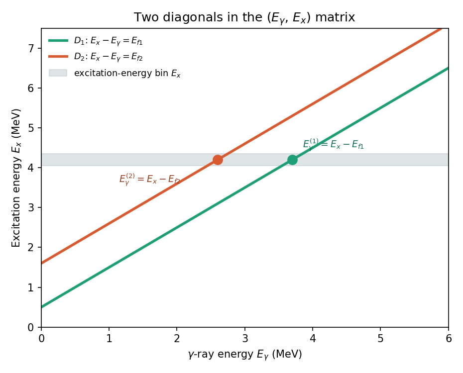

ShapeIt¶
ShapeIt is an open-source, ROOT-based C++ framework that implements the Shape method for the model-independent extraction of the γ-ray strength function (γSF) and, in combination with the Oslo method, the absolute partial nuclear level density (NLD) — with no dependence on level-density models1.
Status
This documentation tracks the ShapeItLatest branch of the
ShapeIt repository.
The basics¶
The Oslo method extracts the NLD, \(\rho(E_x)\) — the number of nuclear levels per unit excitation energy \(E_x\) — and the γSF, \(f(E_\gamma)\) — the average reduced probability for γ emission/absorption at γ-ray energy \(E_\gamma\) — simultaneously from a first-generation (primary) γ-ray matrix. But the factorization underlying this extraction is only unique up to a transformation
where \(T(E_\gamma) \propto E_\gamma^3 f(E_\gamma)\) is the transmission coefficient, \(A\) and \(B\) are overall normalization constants, and \(\alpha\) is a common slope shared by both quantities. Conventionally, \(\alpha\) has to be fixed using the level density at the neutron separation energy — data that simply doesn't exist for short-lived nuclei far from stability.
The ratio method: two decay paths from the same state¶
The Shape method1 removes this dependence. The idea is illustrated below: an excited state at excitation energy \(E_x\), sitting in the dense quasicontinuum, can decay by a primary γ ray directly to either of two known, low-lying discrete levels, \(L_1\) or \(L_2\). Call the number of counts (intensity) observed in each of these two transitions \(N_{L1}(E_x)\) and \(N_{L2}(E_x)\).

Figure — Within a narrow excitation-energy window (grey band) in the quasicontinuum, two states feed the known levels \(L_1\) and \(L_2\) via primary γ transitions, with intensities \(N_{L1}(E_x)\) and \(N_{L2}(E_x)\). The quasicontinuum itself is sketched with level density increasing towards higher \(E_x\), until individual levels blend into a true continuum.
Taking the ratio of these two intensities (each corrected by \(E_\gamma^3\), since \(T(E_\gamma)\propto E_\gamma^3 f(E_\gamma)\)) gives directly the ratio of the γSF at the two corresponding γ-ray energies:
where:
| Symbol | Meaning |
|---|---|
| \(E_x\) | Excitation energy of the initial (quasicontinuum) state |
| \(E_{L1}\), \(E_{L2}\) | Excitation energies of the two known, discrete final levels |
| \(N_{L1}(E_x)\), \(N_{L2}(E_x)\) | Measured intensities of the two primary transitions from \(E_x\) — the two labeled arrows above |
| \(E_x - E_{L1}\), \(E_x - E_{L2}\) | The γ-ray energies of the two transitions |
| \(f(E_\gamma)\) | The γ-ray strength function at γ-ray energy \(E_\gamma\) |
| \(R\) | The ratio of γSF values at those two γ-ray energies |
Because the population of the initial state and the density of states around it are common to both transitions, they cancel exactly in \(R\) — so the γSF ratio comes out free of any level-density model input, under the generalized Brink–Axel hypothesis. Repeating this for many different values of \(E_x\) gives a series of \((E_\gamma, f)\) pairs; connecting them with a sewing interpolation then yields the γSF shape over a wide energy range — and comparing that shape with an Oslo-method result for the same data set fixes the slope \(\alpha\) that the Oslo method alone cannot provide (see The algorithm for exactly how ShapeIt does this from a real \((E_\gamma, E_x)\) matrix).
From decay scheme to matrix¶
In real data, ShapeIt doesn't see a decay scheme — it works from a two-dimensional \((E_\gamma, E_x)\) coincidence matrix. The two decay paths above become two diagonals in that matrix, since each one obeys \(E_x - E_\gamma = E_{Lj} = \text{constant}\):

Figure — The same two decay paths, now seen as diagonals \(D_1\) and \(D_2\) in the \((E_\gamma, E_x)\) matrix. The excitation-energy gate (grey band) crossing both diagonals is exactly the state \(E_x\) shown in the level scheme above; its two crossing points give the γ-ray energies of the two transitions.
This is the representation The user guide and The algorithm work with directly.
What ShapeIt adds on top of the method¶
- A symmetric sewing algorithm that removes the dependence of the sewn shape on the starting bin of the interpolation (see The algorithm).
- Automated peak fitting (single or doublet) with an excitation-energy-dependent width calibration.
- Sliding-window and bin-size scans to inspect the sensitivity of the extracted shape to binning choices.
- A Monte Carlo procedure that turns those choices, together with statistical uncertainties, into a quantitative uncertainty on the slope correction \(\alpha\) and, through it, on the absolute partial level density.
Where to start¶
- Installation — requirements and how to launch ShapeIt
- Input data format — what your ROOT matrix needs to look like
- User guide — step-by-step walkthrough, from opening a file to the absolute partial level density
- The algorithm — the physics and math behind sewing and the Monte Carlo uncertainty
- Settings files — saving and reloading your analysis setup
Citing ShapeIt¶
If you use ShapeIt in a publication, please cite:
- D. Mücher, A. Spyrou, M. Wiedeking, M. Guttormsen, A. C. Larsen, F. Zeiser, C. Harris, A. L. Richard, M. K. Smith, A. Görgen, S. N. Liddick, S. Siem, et al., Extracting model-independent nuclear level densities away from stability, Phys. Rev. C 107 (2023) L011602. doi:10.1103/PhysRevC.107.L011602
The Shape method itself was introduced in:
- M. Wiedeking, M. Guttormsen, A. C. Larsen, F. Zeiser, A. Görgen, S. N. Liddick, D. Mücher, S. Siem, A. Spyrou, Independent normalization for γ-ray strength functions: The shape method, Phys. Rev. C 104 (2021) 014311. doi:10.1103/PhysRevC.104.014311
-
M. Wiedeking, M. Guttormsen, A. C. Larsen, F. Zeiser, A. Görgen, S. N. Liddick, D. Mücher, S. Siem, A. Spyrou, Independent normalization for γ-ray strength functions: The shape method, Phys. Rev. C 104 (2021) 014311. doi:10.1103/PhysRevC.104.014311 ↩↩